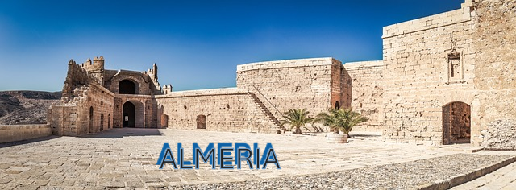
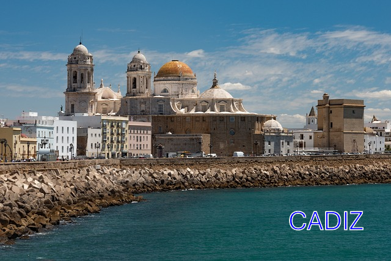
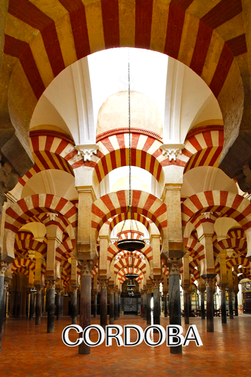
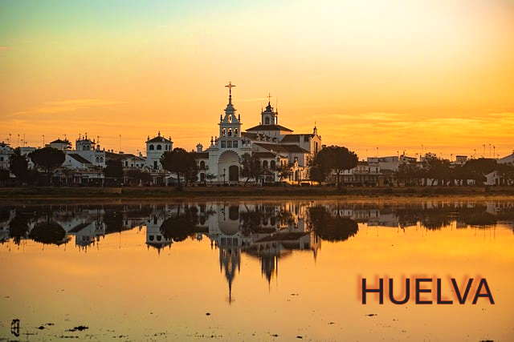
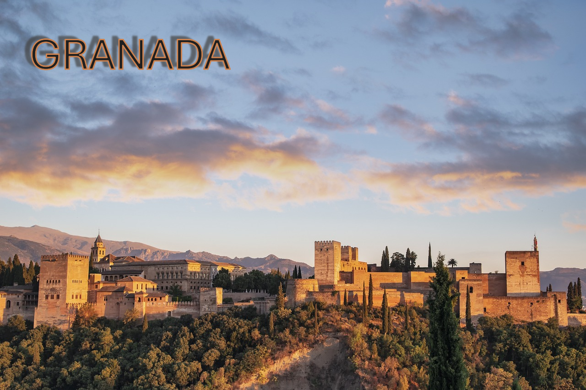
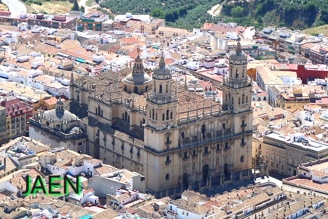
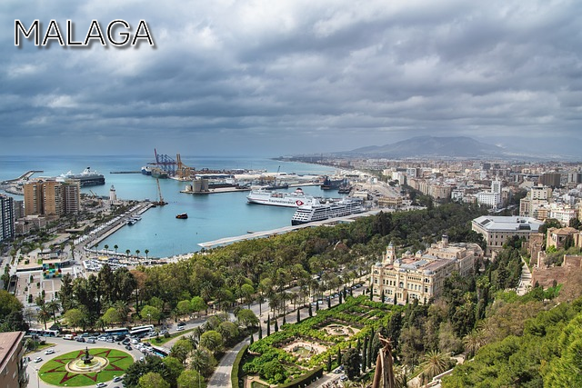
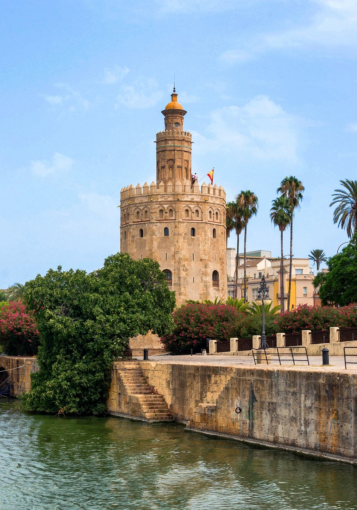

es una ciudad y municipio español, capital de la provincia homónima, en la comunidad autónoma de Andalucía. Es el centro neurálgico de la Comarca Metropolitana de Almería, en el extremo sureste de la península ibérica y de la comarca turística de Almería-Cabo de Gata-Níjar.4 La rodean por el oeste la sierra de Gádor, por el norte sierra Alhamilla y por el este el valle y delta del río Andarax y, más allá, una llanura que culmina en la sierra de Cabo de Gata. Al sur, su puerto y litoral se abren a una amplia bahía sobre el mar Mediterráneo.5